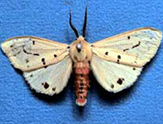

| Home |
| MUSTARD |
| 1. Mustard aphid |
| 2. painted bug |
| 3. mustard sawfly |
| 4. green peach aphid |
| 5. pea leaf-Miner |
| 6. Bihar hairy caterpiller |
| 7. Cabbage butterfly |
| 8. diamondback moth |
| questions |
| Download Notes |
PESTS OF MUSTARD (Brassica) :: Major Pests :: Bihar Hairy Caterpiller
6. Bihar Hairy Caterpillar: Spilosoma obliqua (Arctiidae: Lepidoptera)
Distribution and status: Sporadic pest widely distributed in the Orient. It is very serious in Bihar, Madhya Pradesh, Uttar Pradesh and Punjab
Host range: Sesamum, mash (Phaseolus mungo), mung (P. aureus), linseed, mustard, sunflower and some vegetables.
 |
Bionomics: The moth measures about 50 mm across the wing spread. Adults have crimson coloured body with black dots. Wings pinkish with numerous black spots. Larva is orange coloured with broad transverse bands with tuft of yellow hair that are dark at both end.Pest breeds from March to April and again from July to November. Adult female lays 400-1000 light green, spherical eggs in clusters on the underside of the leaves. Egg period 8-13 days. Larval instars 7 and period 30-56 days. Pupation takes place in plant debris or soil and pupal period 7-15 days. Adult lives for 7 days. Early instars are gregarious and later instars disperse in search of food.
Damage symptoms: The caterpillars eat leaves and soft portions of stems and branches. In severe infestation, the plants may be completely denuded of leaves.
Management
- The young caterpillars can be killed easily by dusting the infested crop with malathion 5 per cent @ 25 kg/ha.
- When they are full-grown, it is difficult to kill them and very high doses of the pesticides are needed. The chemical control measures are same as in case of red hairy caterpillar.